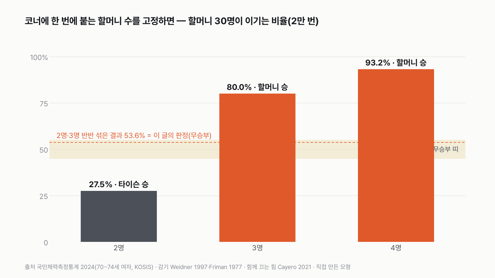
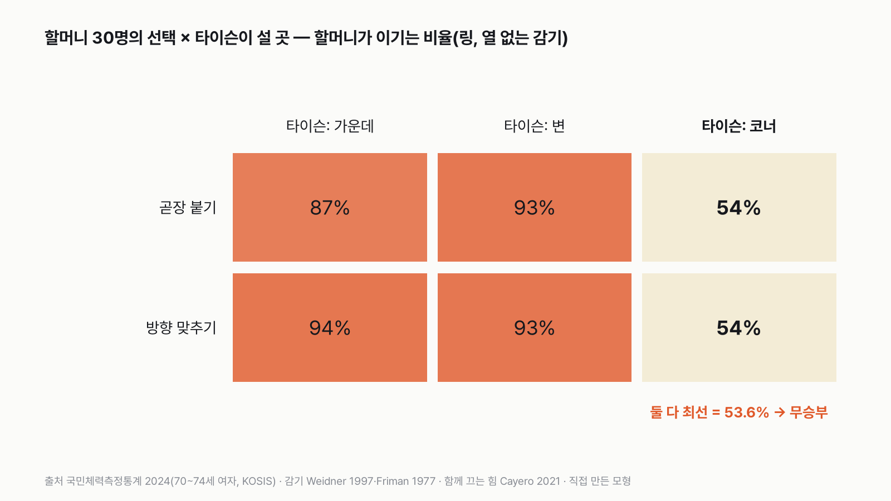
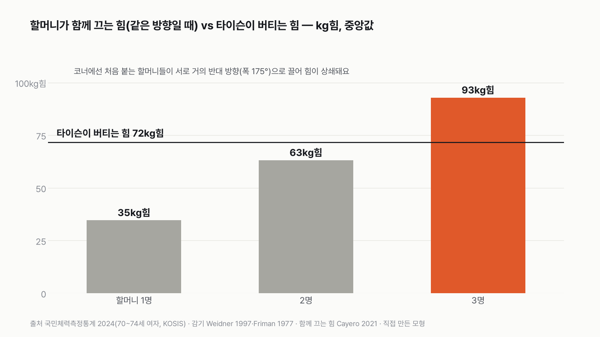
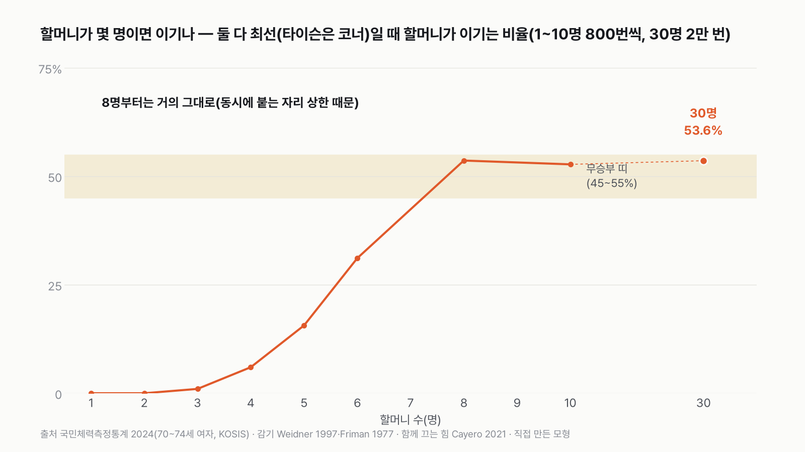
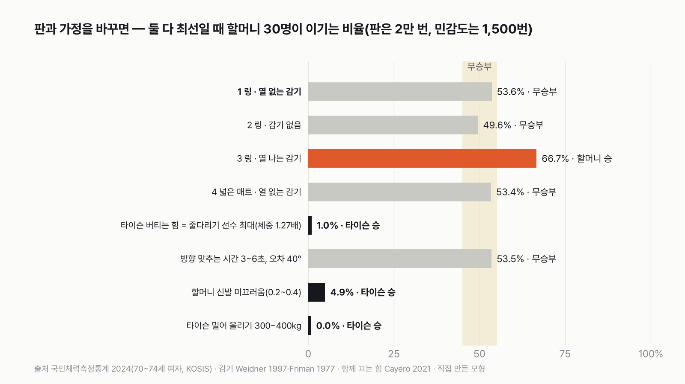

죽음을 각오한 할머니 30명 vs 감기 걸린 마이크 타이슨, 누가 이길까
결과를 보기 전에 먼저 골라 주세요. 투표하면 독자 예상과 데이터 결과를 나란히 보여 드려요.
독자 투표
죽음을 각오한 할머니 30명 vs 감기 걸린 타이슨, 누가 이길까?
3줄 요약
- 링 위에 할머니 30명과 감기 걸린 마이크 타이슨이 있어요. 때리기는 없어요. 누가 이길까요?
- 할머니는 국민체력측정통계의 70~74세 여성 평균 체력, 타이슨은 1988년 전성기 체격에 감기가 근력을 얼마나 줄이는지 연구 자료로 맞췄어요.
- 투표하면 결과가 바로 아래에 열려요. 할머니가 몇 명이면 비기는지, 감기가 없으면 어떻게 되는지도 함께 보여 드려요.
조건과 규칙
- 아무도 때리지 않아요. 타이슨은 밀치거나 뿌리치기만, 할머니들은 매달리거나 밀거나 끌기만 해요.
- 할머니들은 타이슨을 넘어뜨려 3초 동안 누르면 이겨요. 타이슨은 할머니 30명을 모두 링 밖으로 내보내면 이겨요.
- 할머니는 2024년 70~74세 여성 평균(키·몸무게·악력 등), 타이슨은 1988년 체격이에요. 감기가 힘을 얼마나 줄이는지는 연구 자료로 맞춰요.
- 경기장은 권투 링(한 변 6.1m)이에요. 감기 없음, 열 나는 감기, 넓은 매트 판도 따로 겨뤄요.
결과 요약
- 최종 판정은 무승부예요. 타이슨은 코너에 등을 붙이는 게 최선이고, 그때 할머니가 이기는 비율이 53.6%예요.
- 이 무승부의 정체는 '코너에 한 번에 몇 명이 붙느냐'예요. 2명이면 타이슨(할머니 27.5%), 3명이면 할머니(80.0%)가 이겨요. 모형이 2명과 3명을 반반으로 섞어서 무승부가 됐어요.
- 타이슨이 줄다리기 선수만큼 버티거나 할머니 신발이 미끄러우면 타이슨이, 타이슨이 열 나는 감기에 걸렸으면 할머니가 이겨요.
그래서? 30명이 다 덤벼도, 타이슨 몸에 동시에 손을 댈 수 있는 자리는 몇 개뿐이에요. 승부는 그 자리 수가 정해요.
독자 예상 vs 데이터 결과
죽음을 각오한 할머니 30명 vs 감기 걸린 타이슨, 누가 이길까?
데이터 결과: 무승부. 데이터 결과는 무승부예요. 코너에 할머니 둘이 붙으면 타이슨, 셋이 붙으면 할머니가 이겨요.


규칙은 이래요. 아무도 때리지 않아요. 타이슨은 밀치기·뿌리치기만, 할머니들은 매달리기·밀기·끌기만 해요. 그래서 타이슨이 로프를 붙잡고 버티는 건 허용되지 않는다고 봤어요(검토를 받고 덧붙인 해석이에요). 할머니들은 타이슨을 넘어뜨려 3초 누르면 이기고, 타이슨은 30명을 모두 링 밖으로 내보내면 이겨요. 경기는 3분 3라운드(9분)이고, 9분 안에 아무도 못 이기면 무승부예요. 할머니가 이기는 비율이 45~55%여도 무승부로 쳐요.
| 판 | 승자 | 승부를 가른 숫자 |
|---|---|---|
| 1 링 · 열 없는 감기 | 무승부 | 할머니 53.6%(경계 근처) |
| 2 링 · 감기 없음 | 무승부 | 할머니 49.6% |
| 3 링 · 열 나는 감기 | 할머니 | 할머니 66.7% |
| 4 넓은 매트 8×8m · 열 없는 감기 | 무승부 | 할머니 53.4%(경계 근처) |
| 코너에 붙는 인원(고정) | 승자 | 할머니가 이기는 비율 |
|---|---|---|
| 2명 | 타이슨 | 27.5% |
| 3명 | 할머니 | 80.0% |
| 4명 | 할머니 | 93.2% |
최종: 질문의 링·열 없는 감기 판은 무승부예요. 코너에 둘이 붙으면 타이슨, 셋이 붙으면 할머니이고, 그 사이에서 무승부가 나왔어요.
1판 링 · 열 없는 감기 — 무승부
처음 계산에서는 할머니 30명이 100% 이겼어요. 독자 검토에서 할머니들의 힘을 모두 한 방향으로 더했고, 타이슨은 링 가운데 서 있기만 했다는 지적을 받았어요. 힘의 방향을 따지고 타이슨에게 자리를 고르게 하자 결과가 크게 바뀌었어요.


타이슨이 링 가운데 서면 할머니가 87~94% 이겨요. 사방에서 방향이 흩어져도 6~8명이 한꺼번에 붙으니까요. 변으로 가서 할머니를 먼저 밀어내도 93%예요. 링 가장자리에 할머니들이 줄지어 서 있어서, 한 명을 밀어내는 사이 옆에서 4~5명이 붙거든요. 그런데 코너에 등을 붙이면 54%로 떨어져요. 한 번에 2~3명만 붙을 수 있고, 처음 붙는 할머니들은 코너 양옆 로프를 따라 다가와 서로 거의 반대 방향으로 끌어서(방향 폭 중앙값 175°) 힘이 많이 상쇄돼요. 할머니가 방향을 맞추든 곧장 붙든 결과는 같았어요.


힘으로 보면 이래요. 할머니 한 명이 끄는 힘은 약 35kg힘, 타이슨이 버티는 힘은 약 72kg힘이에요. 같은 방향으로 끌어도 두 명은 63kg힘으로 모자라고, 세 명이면 93kg힘으로 넘어요. 그래서 코너에 몇 명이 붙느냐가 판을 갈라요.
할머니가 이길 땐 3.3초에 넘어뜨려 6.3초에 이기고(넘어짐 + 3초 누르기), 타이슨이 이길 땐 코너에 붙은 두세 명을 하나씩 로프 밖으로 내보내며 30명을 다 내보내는 데 54초 남짓 걸렸어요.
코너에 몇 명이 붙느냐 — 2명이면 타이슨, 3명이면 할머니
이 무승부를 들여다보니 팽팽한 승부가 아니었어요. 코너에 붙는 인원을 2명으로 고정하면 할머니 27.5%로 타이슨이, 3명이면 80.0%로 할머니가, 4명이면 93.2%로 할머니가 이겨요. 모형에 2명과 3명을 반반으로 섞어 넣었더니, 그 결과가 53.6%로 무승부 띠에 들어간 거예요. 코너에 실제로 몇 명이 손을 댈 수 있는지 몸 폭으로 따져 보려 했는데, 70대 여성의 어깨너비 평균을 찾지 못해 계산하지 못했어요.
몇 명이면 비기나


할머니가 3명이면 1%, 5명이면 16%, 6명이면 31%, 8명이면 54%예요. 그 뒤로는 10명이든 30명이든 50~54%에 머물러요. 이건 할머니 수가 소용없다는 발견이라기보다, 동시에 붙을 수 있는 자리 수를 2~3개로 상한을 둔 모형이라 그렇게 나온 거예요. 뒷사람이 앞사람을 밀어 힘을 보태는 방법은 모형에 없어요.
타이슨이 이기려면
타이슨이 버티는 힘을 줄다리기 엘리트 선수의 최대치(체중의 1.27배, 약 126kg힘)로 올리면 할머니 승률이 1%로 떨어져 타이슨이 이겨요. 이 글의 기본값은 체중의 0.72배로 선수보다 한참 낮게 잡았고, 그 근거가 약해요. 할머니 신발이 미끄러운 바닥이면 5%, 타이슨이 300~400kg을 밀어 올릴 수 있으면 0%로 역시 타이슨이에요. 방향을 맞추는 데 3~6초가 걸리고 오차가 커도(40°) 54%로 무승부 그대로였어요.


나머지 판 — 감기와 넓은 매트
감기는 판을 조금 움직였어요. 감기가 없으면 49.6%, 열 없는 감기면 53.6%로 차이는 있지만 둘 다 무승부예요. 판정을 바꾸는 건 열 나는 감기뿐이에요. 타이슨의 힘이 5~15% 줄면 66.7%로 할머니가 이겨요. 넓은 매트(8×8m)에선 53.4%로 무승부예요. 표본을 늘리기 전(1,500번)에는 56.0%로 할머니 승이었는데, 2만 번으로 다시 돌리니 무승부 띠 안으로 들어왔어요.
계산을 고치면서 생각이 바뀌었어요. 처음엔 사람 수가 이긴다고 썼어요. 다시 보니 이 모형에서 승부를 정한 건 타이슨 몸에 동시에 닿을 수 있는 자리 수였고, 그 수는 제가 정한 가정이었어요. 이 대결의 갈림길은 코너의 할머니 두 명과 세 명 사이에 있어요.
이 숫자는 어디서 왔나요
출처
기준일 할머니 체력은 2024년 국민체력측정통계(KOSIS, 2026년 11월 6일 받음). 모형은 2026년 11월 6일에 돌렸어요.
국민체육진흥공단국민체력측정통계
- 노인기 악력 변화: 여자KOSIS DT_113_STBL_1029895
70~74세 여성 악력 22.9kg
- 노인기 신장 변화: 여자KOSIS DT_113_STBL_1029881
키 153.4cm
- 노인기 체중 변화: 여자KOSIS DT_113_STBL_1029883
몸무게 57.4kg
- 노인기 의자에서 일어섰다 앉기: 여자KOSIS DT_113_STBL_1028220
20.6회/30초
- 노인기 3m 표적 돌아오기: 여자KOSIS DT_113_STBL_1029893
6.2초(걸음 속도 범위의 근거)
Weidner 외 1997,Medicine & Science in Sports & Exercise
- 감기와 운동 능력doi:10.1097/00005768-199705000-00003원본 보기
열 없는 감기의 영향
Friman 1977,Scandinavian Journal of Clinical and Laboratory Investigation
- 급성 감염 뒤 근력doi:10.3109/00365517709092633원본 보기
열 나는 감기의 영향
Gandevia 2001,Physiological Reviews
- 최대 힘과 근육의 상한doi:10.1152/physrev.2001.81.4.1725원본 보기
각오한 힘의 위쪽 끝
Cayero 외 2021,International Journal of Environmental Research and Public Health
- 여럿이 함께 끄는 힘doi:10.3390/ijerph19010003원본 보기
함께 끌 때 힘 손실, 줄다리기 선수 최대 힘
어떻게 셌나요
- 할머니는 국민체력측정통계 2024년 70~74세 여성 평균(몸무게 57.4kg, 악력 22.9kg)이에요. 타이슨은 1988년 체격(99kg)이에요.
- 감기: 열 없는 코감기는 운동 능력에 차이가 없었다는 연구(Weidner 1997)에 따라 힘을 0~5%, 열 나는 감기는 열이 내린 직후 근력이 85~95%였다는 연구(Friman 1977)에 따라 5~15% 줄였어요.
- 죽음을 각오한 힘은 평소 최대 힘의 1.0~1.2배예요. 마음먹고 내는 최대 힘도 근육이 낼 수 있는 상한보다 낮다는 연구(Gandevia 2001)에 기대, 각오해도 크게는 늘지 않는다고 봤어요.
- 끄는 힘과 버티는 힘: 바닥을 딛고 낼 수 있는 힘은 대부분 신발과 바닥 사이 마찰이 정해요. 할머니 한 명은 약 35kg힘으로 끌고, 타이슨은 약 72kg힘으로 버텨요(중앙값). 할머니마다 자기가 출발한 쪽으로 끌어서, 붙은 할머니들의 힘을 방향까지 따져 더해요. 서로 반대쪽에서 끌면 상쇄돼요.
- 타이슨이 고르는 자리: 링 가운데(6~8명이 붙음), 변(4~5명), 코너에 등 붙이기(2~3명). 할머니가 고르는 방법: 곧장 붙기, 또는 먼저 한쪽으로 모여 같은 방향으로 끌기(1~3초 더 걸림). 서로 상대의 최선에 맞춘 결과(둘 다 최선)가 판정이에요.
- 코너에 몇 명이 붙나는 근거 없이 2명과 3명을 반반으로 넣은 가정이에요. 이 가정이 결과를 가장 크게 움직여서, 2·3·4명으로 고정한 결과를 함께 보여 드려요.
- 3초 누르기: 타이슨이 일어나는 1~2초 사이에 모인 할머니가 누르는 무게로 따져요. 누운 타이슨 몸 위에는 몸 넓이로 따져 2~4명이 올라탈 수 있고, 팔다리를 붙잡는 할머니는 4명까지 몸무게의 절반만큼 보태요(가정).
한계 10가지
이 데이터로 말할 수 없는 것
- 모형이에요. 실제로 붙여 본 결과가 아니고, 규칙과 가정을 바꾸면 숫자가 바뀌어요. 그래서 판정을 바꾸는 가정을 같이 적었어요.
- 코너에 한 번에 붙을 수 있는 인원(2~3명 반반)은 근거 없는 가정이고, 결과를 가장 크게 움직여요.
- 넘어짐은 바닥 마찰 한계로만 따졌어요(미끄러져 끌려가는 쪽에 가까워요). 높은 곳을 잡아당겨 중심을 흔드는 쪽은 더 쉽게 넘어질 수 있는데, 넣지 않았어요.
- 뒤에서 밀기(럭비 몰처럼 뒷사람의 힘이 앞사람을 거쳐 전해지는 것)는 모형에 없어요. 넣으면 코너에서도 할머니 쪽으로 기울 수 있어요.
- 양쪽의 피로, 매달린 할머니 무게로 늘어나는 타이슨의 바닥 마찰, 다리를 잡아 넘어뜨리기, 깔린 뒤 구르거나 버티며 빠져나오기도 모형에 없어요.
- 타이슨이 버티는 힘의 기본값(체중 0.72배)은 근거가 약해요. 줄다리기 엘리트 수준(1.27배)이면 할머니가 1%예요.
- 함께 끌 때의 힘 손실(Cayero 2021)은 밧줄 하나를 같은 방향으로 당긴 실험값이에요. 사람 몸을 여러 방향에서 잡는 경우에 그대로 맞는지는 몰라요.
- 측정을 찾지 못해 범위로 가정한 값: 신발-바닥 마찰계수, 타이슨의 버티는 기술과 밀어 올리는 무게, 자리별로 붙을 수 있는 인원, 한 명을 내보내는 시간, 할머니 걸음 속도, 방향 맞추는 시간과 오차, 몸 위에 올라탈 수 있는 인원.
- 할머니 체력은 70~74세 여성 평균이에요. 감기 연구는 젊은 사람을 대상으로 달리기 능력을 쟀어요(Weidner 1997). '죽음을 각오한 힘'의 위쪽 끝(1.2배)은 연구를 참고한 가정이에요.
- 아무도 다치지 않는 규칙이에요. 다치는 장면은 다루지 않았어요.
다음 대결
대결 다 보기
판다 vs 실험맨
판다 vs 실험맨, 다섯 판 승부로 하루에 '더 많이 먹는' 쪽은?
A판다vsB실험맨
투표하러 가기

배달·외식비 vs 스마트폰
실험맨이 1년 동안 사 먹는 밥값(배달 포함)으로 최신 스마트폰을 살 수 있을까?
A산다vsB못 산다
투표하러 가기

20대 여성 vs 65세 이상 남성
20대 여성 실험맨 vs 65세 이상 남성 실험맨, 네 판 승부로 하루 운동을 더 많이 하는 쪽은?
A20대 여성vsB65세 이상 남성
투표하러 가기

짜장면 vs 치킨
짜장면 vs 치킨, 다섯 판 승부로 값이 더 많이 오른 국민 음식은?
A짜장면vsB치킨
투표하러 가기

출퇴근 vs 연차
실험맨이 1년 동안 출퇴근에 쓰는 시간과 연차 휴가로 쉬는 시간, 세 판 승부로 더 긴 쪽은?
A출퇴근vsB연차 휴가
투표하러 가기

경복궁 vs 에버랜드
경복궁 vs 에버랜드, 다섯 판 승부로 1년에 사람이 더 많이 찾는 곳은?
A경복궁vsB에버랜드
투표하러 가기

마라톤 세계기록 vs 서울 버스
마라톤 세계기록 속도로 뛰는 사람 vs 서울 시내버스, 세 판 승부로 더 빠른 쪽은?
A세계기록 사람vsB서울 버스
투표하러 가기

실험맨 vs 수영장
실험맨 혼자 1년 쓴 수돗물로 25m 수영장 레인 한 줄을 채울 수 있을까?
A채운다vsB못 채운다
투표하러 가기
새 글 나오면 받아 보기
피드 리더 앱에 이 사이트 주소를 한 번 넣어 두면, 새 글이 올라올 때 앱에 떠요. 가입이나 메일 주소는 필요 없어요.
받는 법 보기
- 피드 리더 앱을 하나 골라요. 새 글을 모아 보여 주는 앱이에요. 예를 들면 Feedly나 Inoreader가 있어요. 둘 다 무료고 웹·휴대폰에서 써요.
- 앱에서 '구독 추가'(+)를 누르고 아래 주소를 붙여 넣어요.
- 끝이에요. 새 글이 올라오면 앱 목록에 떠요.
https://protofu.github.io/opendata-insight/feed.xmlFeedly를 쓴다면 여기를 눌러 바로 추가할 수도 있어요.